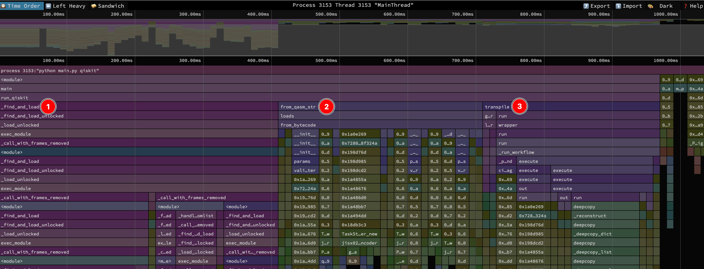
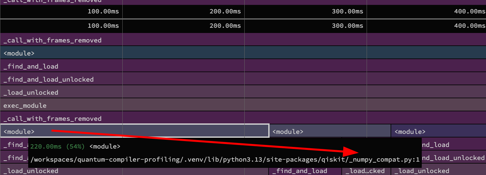
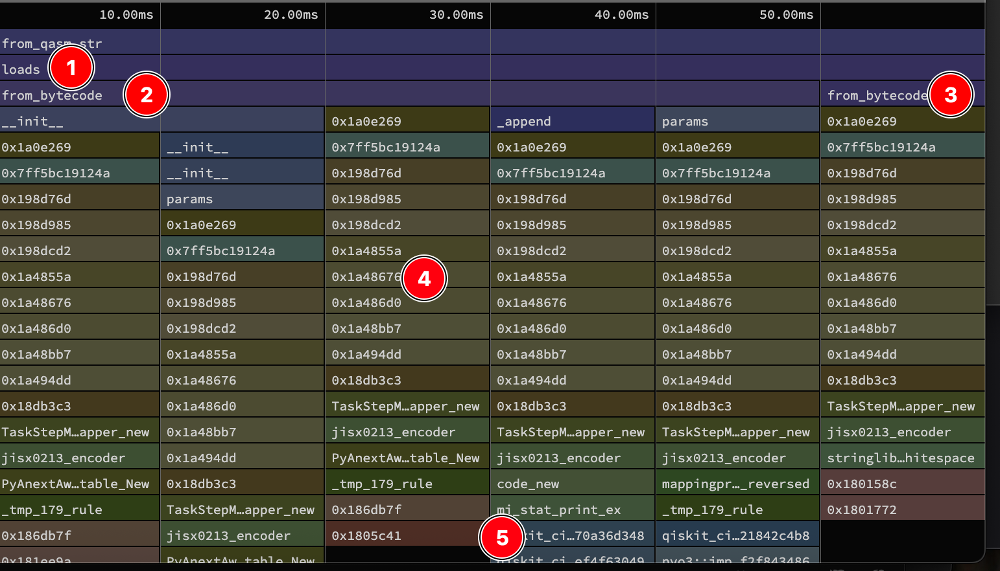
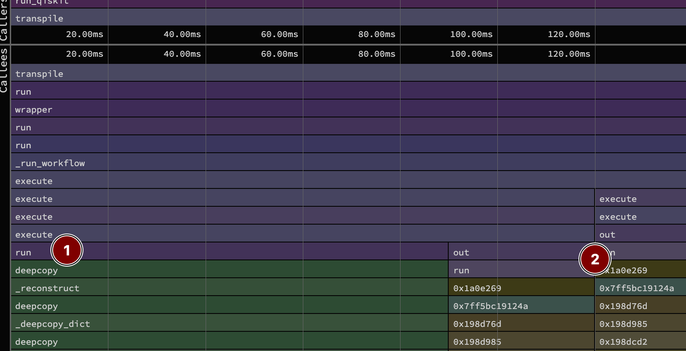
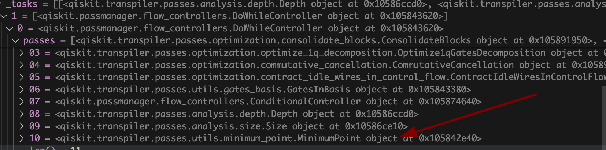
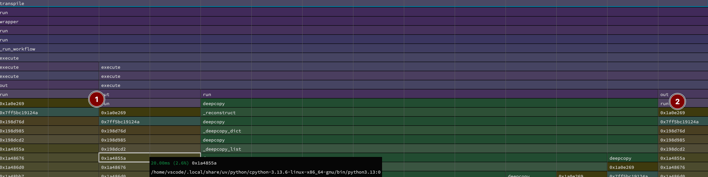

Profiling Quantum Compilers: Qiskit
This post is the first follow-up in the quantum compiler profiling series, focusing on Qiskit version 2.1.1. Let’s dive right in!
Overview
We begin with a top-level view of the compilation (or transpilation in Qiskit lingo). This took a total of 1.04 seconds. You can inspect this function-aggregated view in speedscope here. 
I’ve labeled the 3 primary calls within the profiling function
def run_qiskit(qasm):
from qiskit import QuantumCircuit, transpile # (1)
circuit = QuantumCircuit.from_qasm_str(qasm) # (2)
return transpile( # (3)
circuit, basis_gates=["rz", "rx", "ry", "h", "cx"], optimization_level=3
)- 1 [39%, 410ms] The call tree starting from
_find_and_loadimporting Qiskit. - 2 [29%, 300ms] in
from_qasm_strparsing the 25K line QASM file into Qiskit’s in-memory circuit representation. - 3 [25%, 260ms] in
transpileactually optimizing the circuit.
Let’s dig in a bit more.
import
Almost 40% of this run is on imports! I suspect this will be similar for most libraries we profile, as there is a lot of dynamic importing and logic these libraries are doing to support different features, lazily load some more complex dependencies etc. I’m not going to explore which import(s) are taking all this time but a good bit comes from Qiskit itself importing numpy as seen in the sandwich view here: 
But I do want to highlight this overhead is meaningful for users! For interactive sessions like notebooks you only pay for this once, but in scripts (CI tests etc), you pay for this each time the script is run. This might explain the appeal of languages like Rust, where most of this is resolved at compile time.
For diving deeper, checkout this old but still solid reference on what Python does when you type from package import foo.
Parsing QASM
Next up is from_qasm_str, which takes 30% of the overall runtime. For this exploration, I switched to the non-function aggregated sampling (speedscope here) because functions like from_bytecode are pretty lengthy. We want to know specifically where inside that function the code is spending time, which is lost with function aggregation. Looking at the sandwich view around from_qasm_str we have some structure

For 1 loads itself is defined in qasm2/__init__.py, reproduced in part here
def loads(...):
custom_instructions = list(custom_instructions)
return _parse.from_bytecode(
_qasm2.bytecode_from_string(
string,_qasm2.bytecode_from_string calls directly into Rust to generate some bytecode representation1 of the parsed QASM that must be easier to manage, and probably is a simpler post-validated representation. But importantly, that call itself doesn’t show up in any samples, so it must be pretty fast.
1 Bytecode is an instruction set oriented view of a program that simplifies processing by an interpreter. Python itself compiles your code (at execution time) to bytecode before it is run by the Python interpreter. QASM doesn’t have an official bytecode specification, but converting it to bytecode before interpreting is a good strategy to separate parsing + validation from the downstream use.
For 2 and 3, the samples we have are all in _parse.from_bytecode, where the bytecode is used to construct the in-memory circuit. The two spots are nearby lines here
for op in bytecode:
...
if opcode == OpCode.Gate:
gate_id, parameters, op_qubits = op.operands # (2)
qc._append(
CircuitInstruction(gates[gate_id](*parameters),
[qubits[q] for q in op_qubits]) # (3)
)
...Look at the functions called from these lines, that first __init__ is the initializer for an Rz gate, _append is adding a newly created gate to QuantumCircuit, and params is both setting and adding a parameter to the quantum instruction representing a gate. Almost all the hex addresses 4 are calls inside the CPython/libpython shared object file, but I didn’t have debug symbols around to know what they are. But down in 5, we see calls into the Qiskit Rust code to create the Rust instances of these circuit instructions that are then wrapped in Python. I’m not familiar yet with Qiskit internals, but there will always be some overhead to go back and forth to Rust to create each gate instance.
I don’t have any deep insights, but am interested to see the parsing performance of other libraries. It’s also interesting to see the mix of Python and Rust in Qiskit, where the initial bytecode parse is super fast, but there is still work to improve the in-memory construction of circuit representations afterwards.
Compiling (aka Transpiling)
Ok, finally showtime! Again, we return to the sandwich view. Note that this is “left-heavy” within the view, meaning the calls show are not time-ordered, but shifted left by longest call.

Qiskit has a sophisticated PassManager class for specifying the transpilation passes to run. Our example code here used the default passes with the highest optimization setting. The _run_workflow and execute calls in the callstack are the machinery to dispatch the different passes. But the actual work is done in a specific pass run function. The level 3 passes are defined here, but only two stand out in the profiling results 2.
2 Note that the results shown here were sampled at 100 times per second, meaning each sample is 10 milliseconds. This transpile section was ~250ms, so we have 25 samples. The limiting sampling factor was the GitHub workspace machine, which had trouble keeping up at a higher rate (but which I used to get access to native stack trace details). I did run locally with 1000 times per second sampling (but no native symbol support on my Mac), which showed similar time spent in these functions.
MinimumPoint
1 is part of the MinimumPoint transformation pass. This is used by other iterative passes to see if successive runs have improved some circuit metrics. It was hard to infer what these passes were from the sampled callstacks, so I instead put a breakpoint in the debugger to take a peek when the MinimumPoint class was constructed. I walked up the stack to see the passmanager this is part of and found:  So this pass group is running a bunch of optimization passes, and this MinimumPoint class is checking when it’s converged to a local minimum “best” for depth and size. But the heavy part here is all in one line
# ...
elif score < state.score:
state.since = 1
state.score = score
state.dag = deepcopy(dag) #<-- this oneOnce a better score is reached, a full copy of the entire DAG is captured. You can scroll below in speedscope to see all the calls this results in.
Given the Python object model, a true independent copy of an object requires copying each internal object as well. This is expensive because Python variables are fundamentally references (pointers) to objects in memory. A simple (or “shallow”) copy of the DAG would just create a new list of pointers to the exact same gate objects. Modifying a gate in the new DAG would also modify it in the old one.
deepcopy, in contrast, must recursively walk the entire object graph—visiting every single gate, parameter, and qubit reference—and create a brand-new, independent Python object for each one. This process involves a massive number of new object allocations and reference lookups, all managed by the Python interpreter, making it far slower than a single, contiguous memory copy you might see in a language like C.
For this large circuit, it’s a heavy operation. If the IR were represented in Rust with a less pointer-heavy structure (like a more flat memory layout), it could be possible to optimize this. But I’m guessing this is complex as long as parts of the IR are still managed as Python objects at a granular level, versus entirely represented in Rust.
Commutative Cancellation
2 is the other heavy pass spot, with two call stacks corresponding to commutative_cancellation which is (unsurprisingly) a Rust-accelerated pass that uses commutation relations to identify cancellation opportunites between gates. I haven’t tried compiling the Rust components of Qiskit with debug symbols to get the locations within the Rust code directly. But for the longer 30ms call (3 samples), 20 ms (2 samples) are taken when releasing memory in free. In the other, 10 ms (1 sample) of the 20ms are spent hashing, which I assume is a lookup for common gate pairs.
If you look in the time-ordered view you see there are two commutative cancellation pass runs surrounding the minimum point call. Perhaps there could be savings by retaining the analysis or hash lookup across calls.

Extra Extra - Qiskit Transpiler Profiling
Qiskit nicely provides a callback hook to capture the impact of various passes, including time spent on passes. This is a nice domain-specific companion to the general profiling results presented here. Running this extra code, we see 3
3 Qiskit has both analysis passes and transformation passes. The former calculates some properties of the DAG, but doesn’t modify it. The latter does modify it. For simplifying this table, I’ve excluded analysis passes as they didn’t have much runtime in this example.
| Pass | Time (s) | Size | Depth | 2Q Gates |
|---|---|---|---|---|
| UnitarySynthesis | 0 | 25100 | 796 | 10050 |
| HighLevelSynthesis | 0 | 25100 | 796 | 10050 |
| BasisTranslator | 0.0004 | 25100 | 796 | 10050 |
| ElidePermutations | 0 | 25100 | 796 | 10050 |
| RemoveDiagonalGatesBeforeMeasure | 0 | 25100 | 796 | 10050 |
| RemoveIdentityEquivalent | 0.0006 | 15380 | 796 | 10050 |
| InverseCancellation | 0.001 | 8900 | 796 | 3570 |
| ContractIdleWiresInControlFlow | 0 | 8900 | 796 | 3570 |
| CommutativeCancellation | 0.0118 | 7289 | 698 | 3570 |
| ConsolidateBlocks | 0.0035 | 7289 | 698 | 3570 |
| Split2QUnitaries | 0 | 7289 | 698 | 3570 |
| UnitarySynthesis | 0 | 7289 | 698 | 3570 |
| HighLevelSynthesis | 0 | 7289 | 698 | 3570 |
| BasisTranslator | 0.0006 | 7289 | 698 | 3570 |
| MinimumPoint | 0 | 7289 | 698 | 3570 |
| ConsolidateBlocks | 0.0035 | 7289 | 698 | 3570 |
| UnitarySynthesis | 0 | 7289 | 698 | 3570 |
| RemoveIdentityEquivalent | 0.0001 | 7289 | 698 | 3570 |
| Optimize1qGatesDecomposition | 0.0012 | 7189 | 696 | 3570 |
| CommutativeCancellation | 0.0056 | 7189 | 696 | 3570 |
| ContractIdleWiresInControlFlow | 0 | 7189 | 696 | 3570 |
| MinimumPoint | 0.0483 | 7189 | 696 | 3570 |
| ConsolidateBlocks | 0.0035 | 7189 | 696 | 3570 |
| UnitarySynthesis | 0 | 7189 | 696 | 3570 |
| RemoveIdentityEquivalent | 0.0001 | 7189 | 696 | 3570 |
| Optimize1qGatesDecomposition | 0.0012 | 7189 | 696 | 3570 |
| CommutativeCancellation | 0.0057 | 7189 | 696 | 3570 |
| ContractIdleWiresInControlFlow | 0 | 7189 | 696 | 3570 |
| MinimumPoint | 0 | 7189 | 696 | 3570 |
For each column, rows in bold had meaningful time duration or change in circuit metric. The most meaningful passes are
RemoveIdentityEquivalent
“Removes gates whose effect is close to an identity operation up to a global phase and up to the specified tolerance.” Looking at the QASM, we can directly see many small angle rotations that are close to identity:
rz(pi/2097152);
rz(0) q[14];This doesn’t change the depth or the number of two qubit gates, but is quite a lot of single qubit gates!
InverseCancellation
“Cancel specific Gates which are inverses of each other when they occur back-to-back.” The only reduction in two-qubit gates! Doing nothing is always easier than doing gates that end up doing nothing! After the prior pass, these opportunities are successive cnots on the same qubits:
cx q[99],q[79];
cx q[99],q[79];CommutativeCancellation
“Cancel the redundant (self-adjoint) gates through commutation relations.” This is the first reduction in gate depth and comes from being able to push gates around via commutation relations and then cancel them once close together. There’s not a local QASM excerpt to show for this conveniently. But looking at the Rust implementation, it looks like this pass treats each qubit as a wire, and then for commuting sets, pushes gates around into a canonical ordering (when they have well defined commutation relations), after which it then combines or cancels gates, replacing with a consolidated gate.
TL;DR
Only a quarter of the runtime was spent in actual transpilation. The rest was in importing Qiskit itself, and parsing the QASM.
You can see the power of the rust Rewrites in e.g. parsing qasm to bytecode. But you can also see the rewrite in progress, where some overhead going back and forth between Python and Rust, and the Python memory model influencing things like copying a DAG.
For transpilation, most time was spent copying the Dag once a fixed point was reached on the optimization pass. By looking at Qiskit specific profiling output via a callback, we saw the few passes that had the largest impact on improvements. Most were applying fairly straightforward simplifications – but those have a big impact on the size, depth and ultimate number of two-qubit gates!